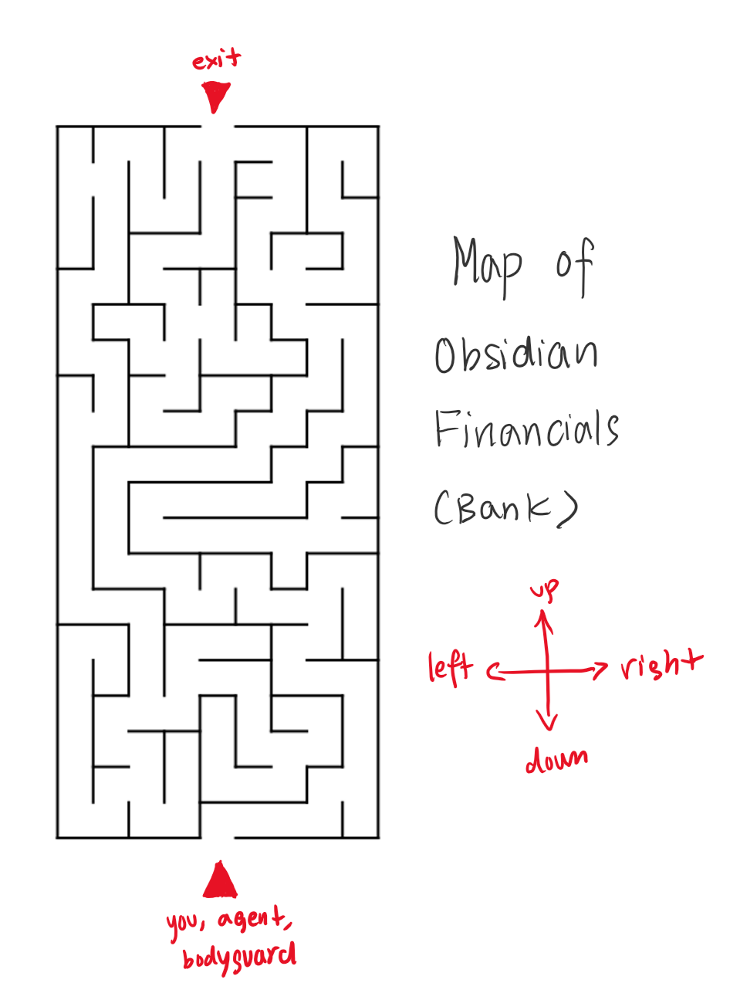

After figuring out the culprit's second clue, you sit at your desk, nulling over the number for almost a full day. You have managed to summarize your findings from the second clue into your continually growing investigation notepad:
The culprit's second "clue" was a number, 1134000000. What could such a big number possibly entail? What can be measured using such a large number anyway? It's a number in the billions!
Just then, you receive an information briefing from one of your agents. Most of it is information you already know, or have been briefed about before.
However, one thing your agent says catches your attention. "... Mary was an old rich woman, she lived with only her husband and their maid... " Your agent rambles.
"Wait," You say. "Pause. Did you say Mary was an old rich woman?"
"Indeed she is," You agent states. "We just found out today after doing an extensive background check on Mary and the family, as Mary was a master at keeping her wealth hidden. Their house was honestly quite small too, for such a rich family!"
Hold up. That could be it! With Mary being so rich, you can finally pinpoint a possible motive for the murder - Mary's wealth. The people closest to her would be most likely to receive all of Mary's wealth after death. Furthermore, there is a chance that the number 1134000000, which would refer to 1.134 billion dollars if interpreted in money, could refer to the amount of wealth Mary posessed.
"Agent," You say. "I'm going to need you to find Mary's bank or where she kept all this money, so we can confirm for ourselves. Then, I'm going to need you to check if Mary had written up a will of any sort."
An hour later, your agent is back with the information you need. "The bank she kept her money at wasn't a mainstream bank - it's this little business all the way across the city in probably the sketchiest location possible."
"We'll need to go see for ourselves if there's anything useful. The bank employees may know something, and if we explain we're here for the investigation, they will let us look into Mary's detailed transaction history," You say.
You and your agent, plus a bodyguard for safety's sake, head to the sketchy bank together to further your investigation. The bank seems even sketchier when you step inside, as the interior is rusted and the bank employees are expressionless, almost seeming like robots. You explain that you're here for the investigation into Mary's death, and ask to check Mary's transaction history - however the bank employee explains that this bank doesn't keep records of transaction history, and that all money is stored in cash.
You realize that Mary may have chosen such a sketchy bank for this exact purpose. What illegal stuff was she up too with 1.134 billion dollars in her possession? You instead ask to see her cash. The bank employee leads you to into the bank which is underground for some reason, through a messy maze of twists and tunnels, and towards the entrance to an enormous vault.
However, things take a dark turn when the employee suddenly runs off before your group as time to react. Then, your agent with enhanced hearing starts feeling distant vibrations. "Oh no," Your agent says, alarmed. "I think this bank is about to collapse on us."
"If we don't think fast, we're all going to die!" You cry. You suddenly remember out of the corner of your eye, seeing your bodyguard grab a map of the bank's underground tunnels. As if on cue, your bodyguard pulls out the map:

HOW CAN YOU ESCAPE THE MAZE?
Your code for this question will consist of multiple of directions (left, right, up, down) separated by spaces.
Assume you don't start inside the map itself, so your first step will move you onto the map.